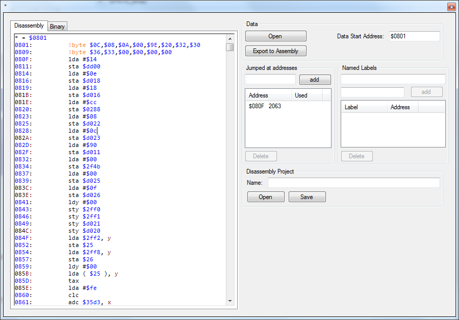

Disassembler
The Disassembler allows to read a binary file and attempts to disassemble it. The disassembler supports provided labels and on the fly disassembly. It differs between jump addresses and memory addresses for easier re-labeling.
During disassembly the target addresses or any branch or jump opcodes are used to parse into the code. Obviously self modifying code fails to disassemble properly; also lo/hi byte jump tables are not recognized. To advance
disassemble you can add new jump addresses via "Jumped at addresses".

Disassembly
This pane shows the disassembly of the provided binary blob. Do not modify directly, it will be regenerated on any change in the binary tab or the label list.
Binary
The binary pane displays the current binary blob. Binary data can be modified directly.
Open
Open lets you choose a file to disassemble. If a .prg extension is used, the first two bytes are interpreted as start address of the following data.
If the data starts at address 0x0800 or 0x0801 the disassembler checks if a BASIC starter is uses and tries to extract the jump address automatically.
Export to Assembly
Exports the disassembly to a new .asm file ready to compile.
Data start address
Displays the determined data start address, modifying updates the disassembly. The value is interpreted as hexadecimal when prefixed with $ or 0x, any other values as decimal.
Jumped at addresses
Contains a list of jumped at addresses which are used as disassembly start points. Any changes result in re-disassembling.
Named labels
Any addresses that match these entries are replaced by the name (like a label) instead of their literal value.
Disassembly Project
Allows saving and reloading of the entire settings of a disassembly session.